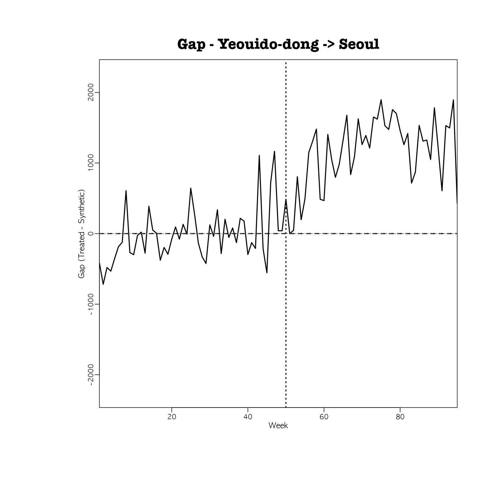
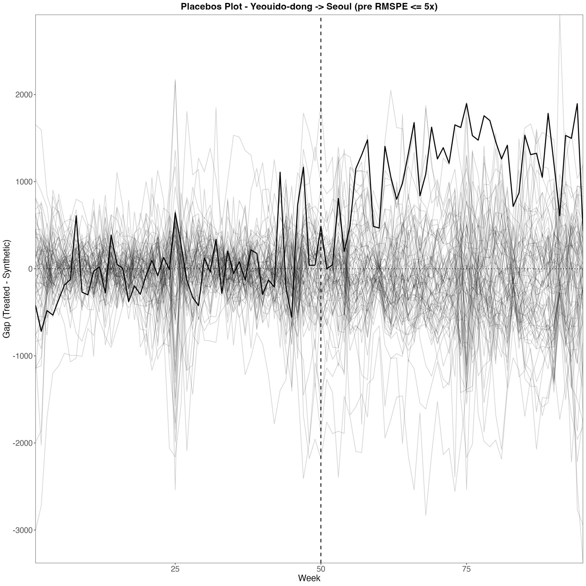
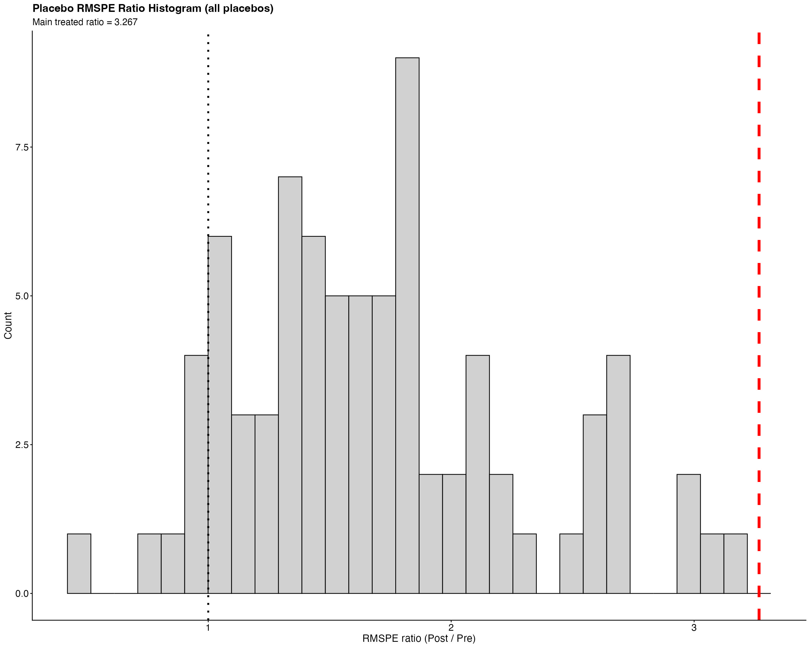

④ 여의도동 출발 대중교통 SCM (도너 79)④ SCM for public transport from Yeouido-dong (79 donors)
여의도동 출발 대중교통 통행(OD 단위 1개)을 처치 단위로, 카드 사용 범위 밖 OD 79개를 도너로 합성통제를 추정했습니다. 도로 분석 ③과 같은 지역에서 대중교통 쪽 변화를 확인하는 분석입니다.Public transport trips from Yeouido-dong (one OD unit) are compared with a synthetic control built from 79 out-of-scope OD donors — the transit counterpart of the road analysis ③.
설계Design
- 예측변수: 환승 비율, 출발동 인구, 이용자 수 5개 구간 평균. V·W nested 최적화. 직접 노출 가능성이 있는 도너 2개를 제외해 81 → 79.Predictors: transfer share, origin population, five block means of users; nested V and W. Two possibly exposed donors are dropped (81 → 79).
- 추론: 사후/사전 RMSPE 비율(Abadie et al. 2015). 위약마다 처치 단위를 도너에 포함, 필터 없음 → p = 순위/80. 사전 RMSPE 5배 이하만 쓰는 결과는 민감도.Inference: post/pre RMSPE ratio (Abadie et al. 2015); the treated unit joins each placebo's donor pool; no filter → p = rank/80. Restricting to pre-RMSPE ≤ 5× is a sensitivity check.
- 효과율: 100 × Σ사후 격차 / Σ사후 합성값.Effect % = 100 × Σ post gap / Σ post synthetic.
결과Results
출처Source:
results/04_yeouido_transit_scm/nested79/summary_D79_nested.csv
(cf_pct, att_weekly, p_all, p_tau5, loo_cf_min/max, intime_ratio_*) ·
세부details:
placebo_pvals_D79_nested.csv ·
loo_sensitivity_D79_nested_cf.csv ·
in_time_summary_D79_nested.csv
처치 전 평균 대비로는 +4.83%(pre_baseline_pct). 처치 전·후 RMSPE 383.8 / 1,253.9, 비율 3.27.Relative to the pre-period mean: +4.83% (pre_baseline_pct). Pre/post RMSPE 383.8 / 1,253.9, ratio 3.27.
시점 위약과 사양 민감도In-time placebos and specification
- 가짜 시행 시점 27·35·42주: 효과 +1.62%, +2.42%, +2.01% (사전 기간 안에서도 양의 격차).Fake start weeks 27, 35, 42: +1.62%, +2.42%, +2.01% (positive gaps even inside the pre-period).
- 교차검증 가중치 사양(adhcv): +5.53%, p = .038.Cross-validated V (adhcv): +5.53%, p = .038.
adhcv79/summary_D79_adhcv.csv



코드Code
code/04_yeouido_transit_scm/ — 본 결과: SCM_여의도_nested79_main.R. 교통카드 OD 자료 필요(반출 제한).headline run: SCM_여의도_nested79_main.R; needs the restricted OD data.